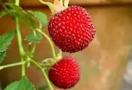

|  |
Overview
The Australian native raspberry, scientifically known as “Rubus parvifolius”, or in the traditional Dharug language as “Kwinjil”, is a small, round fruit, typically around 1-2 centimeters in diameter. It has a vibrant red and slightly textured skin. The interior and taste of the fruit is juicy and sweet, with a hint of bitterness.
|
|
Where it grows
The Australian native raspberry is a native plant to Australia, commonly found in coastal regions. This typically includes parts of Queensland, New South Wales, and Victoria. It thrives in well draining soils and is known to be tolerant of harsh drought conditions. The Australian native raspberry grows on a shrub that spans up to 1 - 2 meters.
Nutritional value identified by First Nations People
First Nations Australians have long recognized the Australian native raspberry as a valuable food source, with traditional knowledge highlighting its nutritional benefits. The fruit is particularly rich in antioxidants, especially anthocyanins and Vitamin C, which are natural pigments that contribute to its vibrant color. These compounds have been extensively studied and are known for their antioxidant properties. The berry’s ability to fight against diseases was first recognized by First Nations people. Because anthocyanins can neutralize free radicals, they may help protect cells from damage. This can contribute to improved heart health, reduced inflammation, and enhanced cognitive function. Also, the Australian native raspberry contains other essential nutrients, such as vitamins and minerals like folate, a vitamin important for blood cell formation and healthy cell growth. It also contains significant amounts of potassium which help reduce the risk of heart disease.
How we use (your fruit) today
Because of its flavor and vibrant color, it is a popular ingredient in jams, jellies, and preservatives. So, its antioxidant properties align with health trends, leading to its use in supplements, beverages, and pharmaceutical products.
Why we should farm (your fruit)
Because of its adaptability to varying climates and soil types, it can thrive in many regions of the country. So, farmers can benefit from its low maintenance requirements and high potential. As well as that, the Australian native raspberry is known for its high productivity and low input requirements. It often requires less fertilizer and pesticides compared to other fruit crops, making it a more sustainable option for farmers. So, Australia’s changing climate and increasing focus on sustainable agriculture, the Australian native raspberry offers a promising opportunity for farmers seeking a resilient and profitable crop.
|